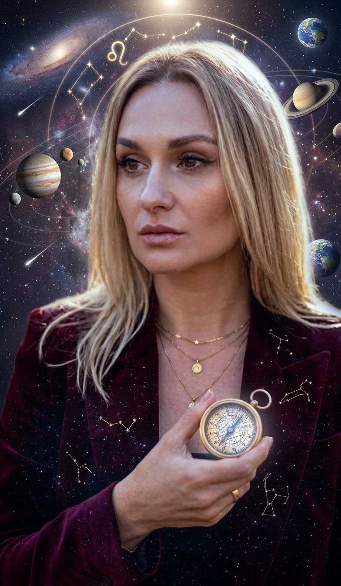

Деньги, любовь, работа и силы. Я всю жизнь работаю с деньгами и цифрами и знаю: деньги волнуют всех, даже когда их достаточно. Поэтому здесь всё по полочкам: ваш месяц по четырём сферам и конкретные дни
Я посчитаю, где стояли планеты в ваш день рождения, и найду, когда в октябре 2026 планеты неба встают к ним в точные аспекты. Поэтому у двух людей одного знака даты получаются разные
Время рождения не нужно. Расчёт идёт прямо в вашем телефоне: дата никуда не отправляется и нигде не сохраняется
Эти события одинаковые для всех. Важнее, какие из ваших точек они задевают, это разобрано по сферам ниже
Золотая точка у даты значит поддержку, красная напряжение
Вы увидели, какие дни месяца задевают ваши планеты. Но без времени и места рождения это половина картины: не видно домов гороскопа, то есть в какой именно сфере вашей жизни сработает каждый транзит. И месяц это не год
А в жизни вопросы звучат так:
Увольняться весной или дотянуть до осени?
Когда начнутся отношения, которых я жду?
В каком месяце запускать своё дело?
Ответ на такие вопросы лежит в вашей личной карте года, с датами
Большинство прогнозов на год сделаны только по соляру: что ждёт вас в деньгах, любви, работе, по сферам. Это картинка года. Но в ней нет главного: когда
Показывает, что вероятно в году: например, что год располагает к серьёзным отношениям или смене работы
Показывает, в какие месяцы это откроется, а в какие лучше держать ушки на макушке. Так я составляю прогноз
И важное: прогноз не программирует вашу жизнь. Сценарист всё равно вы. Прогноз показывает, когда ветер попутный, а грести придётся самим
Вопросы, которые вы только что прочитали в своём расчёте, как раз те, на которые отвечает личный прогноз. Начинаю всегда с вашего запроса: чем точнее вы скажете, что волнует, тем точнее я помогу
Нажмите кнопку и напишите мне в личку слово 2027, расскажу все условия
Написать Оксане в TelegramЕсли вопрос не про «когда», а про «почему деньги приходят и утекают» и «куда мне вообще двигаться», смотрим натальную карту с точки зрения финансов. Это моя основная специализация
Напишите мне в личку слово ДЕНЬГИ, расскажу условия
Написать Оксане в Telegram